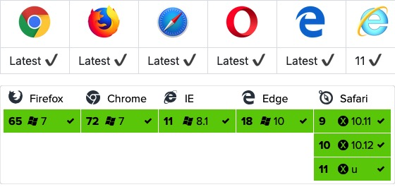

Vue 版本推荐使用 axios 来完成 ajax 请求。
Axios 是一个基于 Promise 的 HTTP 库，可以用在浏览器和 node.js 中。
Github开源地址： https://github.com/axios/axios
安装方法
使用 cdn:
<script src="https://unpkg.com/axios/dist/axios.min.js"></script>
或
<script src="https://lf26-cdn-tos.bytecdntp.com/cdn/expire-1-M/axios/0.26.0/axios.min.js" type="application/javascript"></script>
使用 npm:
$ npm install axios
使用 bower:
$ bower install axios
使用 yarn:
$ yarn add axios
使用方法
从 Axios 模块中导入默认导出的 axios 对象：
import axios from 'axios';
1、发起 GET 请求
为给定 ID 的用户发起请求：
实例
axios.
get('/user?ID=12345')
.
then(function (response
) {
// 成功处理
console.
log(response
);
})
.
catch(function (error
) {
// 错误处理
console.
log(error
);
})
.
finally(function () {
// 总是执行
});
上述请求也可以这样实现：
实例
axios.
get('/user', {
params
: {
ID
: 12345
}
})
.
then(function (response
) {
console.
log(response
);
})
.
catch(function (error
) {
console.
log(error
);
})
.
finally(function () {
// 总是执行
});
如果你想使用 async/await，请在外部函数/方法中添加 async 关键字。
实例
async
function getUser
() {
try {
const response
= await axios.
get('/user?ID=12345');
console.
log(response
);
} catch (error
) {
console.
error(error
);
}
}
注意： async/await 是 ECMAScript 2017 的一部分，不支持 Internet Explorer 和旧版浏览器，因此请谨慎使用。
2、发起 POST 请求
实例
axios.
post('/user', {
firstName
: 'Fred',
lastName
: 'Flintstone'
})
.
then(function (response
) {
console.
log(response
);
})
.
catch(function (error
) {
console.
log(error
);
});
并发执行多个请求：
实例
function getUserAccount
() {
return axios.
get('/user/12345');
}
function getUserPermissions
() {
return axios.
get('/user/12345/permissions');
}
Promise.
all([getUserAccount
(), getUserPermissions
()])
.
then(function (results
) {
const acct
= results
[0];
const perm
= results
[1];
});
浏览器支持情况

GET 方法
我们可以简单的读取 JSON 数据：
GET 实例
const app = {
data() {
return {
info: 'Ajax 测试!!'
}
},
mounted () {
axios
.get('https://www.runoob.com/try/ajax/json_demo.json')
.then(response => (this.info = response))
.catch(function (error) {
console.log(error);
});
}
}
Vue.createApp(app).mount('#app')
尝试一下 »
使用 response.data 读取 JSON 数据：
GET 实例
<div id="app">
<h1>网站列表</h1>
<div
v-for="site in info"
>
{{ site.name }}
</div>
</div>
<script type = "text/javascript">
const app = {
data() {
return {
info: 'Ajax 测试!!'
}
},
mounted () {
axios
.get('https://www.runoob.com/try/ajax/json_demo.json')
.then(response => (this.info = response.data.sites))
.catch(function (error) { // 请求失败处理
console.log(error);
});
}
}
Vue.createApp(app).mount('#app')
</script>
尝试一下 »
GET 方法传递参数格式如下：
传递参数说明
axios.get('/user?ID=12345')
.then(function (response) {
console.log(response);
})
.catch(function (error) {
console.log(error);
});
axios.get('/user', {
params: {
ID: 12345
}
})
.then(function (response) {
console.log(response);
})
.catch(function (error) {
console.log(error);
});
POST 方法
POST 实例
const app = {
data() {
return {
info: null
}
},
mounted () {
axios
.post('https://www.runoob.com/try/ajax/demo_axios_post.php')
.then(response => (this.info = response))
.catch(function (error) {
console.log(error);
});
}
}
Vue.createApp(app).mount('#app')
尝试一下 »
POST 方法传递参数格式如下：
传递参数说明
axios.post('/user', {
firstName: 'Fred',
lastName: 'Flintstone'
})
.then(function (response) {
console.log(response);
})
.catch(function (error) {
console.log(error);
});
执行多个并发请求
实例
function getUserAccount() {
return axios.get('/user/12345');
}
function getUserPermissions() {
return axios.get('/user/12345/permissions');
}
axios.all([getUserAccount(), getUserPermissions()])
.then(axios.spread(function (acct, perms) {
}));
axios API
可以通过向 axios 传递相关配置来创建请求。
实例
axios(config)
axios({
method: 'post',
url: '/user/12345',
data: {
firstName: 'Fred',
lastName: 'Flintstone'
}
});
axios({
method:'get',
url:'http://bit.ly/2mTM3nY',
responseType:'stream'
})
.then(function(response) {
response.data.pipe(fs.createWriteStream('ada_lovelace.jpg'))
});
axios(url[, config])
axios('/user/12345');
请求方法的别名
为方便使用，官方为所有支持的请求方法提供了别名，可以直接使用别名来发起请求：
axios.request(config)
axios.get(url[, config])
axios.delete(url[, config])
axios.head(url[, config])
axios.post(url[, data[, config]])
axios.put(url[, data[, config]])
axios.patch(url[, data[, config]])
注意：在使用别名方法时， url、method、data 这些属性都不必在配置中指定。
并发
处理并发请求的助手函数：
axios.all(iterable)
axios.spread(callback)
创建实例
可以使用自定义配置新建一个 axios 实例：
axios.create([config])
const instance = axios.create({
baseURL: 'https://some-domain.com/api/',
timeout: 1000,
headers: {'X-Custom-Header': 'foobar'}
});
实例方法
以下是可用的实例方法。指定的配置将与实例的配置合并：
axios#request(config)
axios#get(url[, config])
axios#delete(url[, config])
axios#head(url[, config])
axios#post(url[, data[, config]])
axios#put(url[, data[, config]])
axios#patch(url[, data[, config]])
请求配置项
下面是创建请求时可用的配置选项，注意只有 url 是必需的。如果没有指定 method，请求将默认使用 get 方法。
{
// `url` 是用于请求的服务器 URL
url: "/user",
// `method` 是创建请求时使用的方法
method: "get", // 默认是 get
// `baseURL` 将自动加在 `url` 前面，除非 `url` 是一个绝对 URL。
// 它可以通过设置一个 `baseURL` 便于为 axios 实例的方法传递相对 URL
baseURL: "https://some-domain.com/api/",
// `transformRequest` 允许在向服务器发送前，修改请求数据
// 只能用在 "PUT", "POST" 和 "PATCH" 这几个请求方法
// 后面数组中的函数必须返回一个字符串，或 ArrayBuffer，或 Stream
transformRequest: [function (data) {
// 对 data 进行任意转换处理
return data;
}],
// `transformResponse` 在传递给 then/catch 前，允许修改响应数据
transformResponse: [function (data) {
// 对 data 进行任意转换处理
return data;
}],
// `headers` 是即将被发送的自定义请求头
headers: {"X-Requested-With": "XMLHttpRequest"},
// `params` 是即将与请求一起发送的 URL 参数
// 必须是一个无格式对象(plain object)或 URLSearchParams 对象
params: {
ID: 12345
},
// `paramsSerializer` 是一个负责 `params` 序列化的函数
// (e.g. https://www.npmjs.com/package/qs, http://api.jquery.com/jquery.param/)
paramsSerializer: function(params) {
return Qs.stringify(params, {arrayFormat: "brackets"})
},
// `data` 是作为请求主体被发送的数据
// 只适用于这些请求方法 "PUT", "POST", 和 "PATCH"
// 在没有设置 `transformRequest` 时，必须是以下类型之一：
// - string, plain object, ArrayBuffer, ArrayBufferView, URLSearchParams
// - 浏览器专属：FormData, File, Blob
// - Node 专属： Stream
data: {
firstName: "Fred"
},
// `timeout` 指定请求超时的毫秒数(0 表示无超时时间)
// 如果请求花费了超过 `timeout` 的时间，请求将被中断
timeout: 1000,
// `withCredentials` 表示跨域请求时是否需要使用凭证
withCredentials: false, // 默认的
// `adapter` 允许自定义处理请求，以使测试更轻松
// 返回一个 promise 并应用一个有效的响应 (查阅 [response docs](#response-api)).
adapter: function (config) {
/* ... */
},
// `auth` 表示应该使用 HTTP 基础验证，并提供凭据
// 这将设置一个 `Authorization` 头，覆写掉现有的任意使用 `headers` 设置的自定义 `Authorization`头
auth: {
username: "janedoe",
password: "s00pers3cret"
},
// `responseType` 表示服务器响应的数据类型，可以是 "arraybuffer", "blob", "document", "json", "text", "stream"
responseType: "json", // 默认的
// `xsrfCookieName` 是用作 xsrf token 的值的cookie的名称
xsrfCookieName: "XSRF-TOKEN", // default
// `xsrfHeaderName` 是承载 xsrf token 的值的 HTTP 头的名称
xsrfHeaderName: "X-XSRF-TOKEN", // 默认的
// `onUploadProgress` 允许为上传处理进度事件
onUploadProgress: function (progressEvent) {
// 对原生进度事件的处理
},
// `onDownloadProgress` 允许为下载处理进度事件
onDownloadProgress: function (progressEvent) {
// 对原生进度事件的处理
},
// `maxContentLength` 定义允许的响应内容的最大尺寸
maxContentLength: 2000,
// `validateStatus` 定义对于给定的HTTP 响应状态码是 resolve 或 reject promise 。如果 `validateStatus` 返回 `true` (或者设置为 `null` 或 `undefined`)，promise 将被 resolve; 否则，promise 将被 rejecte
validateStatus: function (status) {
return status >= 200 && status < 300; // 默认的
},
// `maxRedirects` 定义在 node.js 中 follow 的最大重定向数目
// 如果设置为0，将不会 follow 任何重定向
maxRedirects: 5, // 默认的
// `httpAgent` 和 `httpsAgent` 分别在 node.js 中用于定义在执行 http 和 https 时使用的自定义代理。允许像这样配置选项：
// `keepAlive` 默认没有启用
httpAgent: new http.Agent({ keepAlive: true }),
httpsAgent: new https.Agent({ keepAlive: true }),
// "proxy" 定义代理服务器的主机名称和端口
// `auth` 表示 HTTP 基础验证应当用于连接代理，并提供凭据
// 这将会设置一个 `Proxy-Authorization` 头，覆写掉已有的通过使用 `header` 设置的自定义 `Proxy-Authorization` 头。
proxy: {
host: "127.0.0.1",
port: 9000,
auth: : {
username: "mikeymike",
password: "rapunz3l"
}
},
// `cancelToken` 指定用于取消请求的 cancel token
// （查看后面的 Cancellation 这节了解更多）
cancelToken: new CancelToken(function (cancel) {
})
}
响应结构
axios请求的响应包含以下信息：
{
// `data` 由服务器提供的响应
data: {},
// `status` HTTP 状态码
status: 200,
// `statusText` 来自服务器响应的 HTTP 状态信息
statusText: "OK",
// `headers` 服务器响应的头
headers: {},
// `config` 是为请求提供的配置信息
config: {}
}
使用 then 时，会接收下面这样的响应：
axios.get("/user/12345")
.then(function(response) {
console.log(response.data);
console.log(response.status);
console.log(response.statusText);
console.log(response.headers);
console.log(response.config);
});
在使用 catch 时，或传递 rejection callback 作为 then 的第二个参数时，响应可以通过 error 对象可被使用。
配置的默认值
你可以指定将被用在各个请求的配置默认值。
全局的 axios 默认值：
axios.defaults.baseURL = 'https://api.example.com';
axios.defaults.headers.common['Authorization'] = AUTH_TOKEN;
axios.defaults.headers.post['Content-Type'] = 'application/x-www-form-urlencoded';
自定义实例默认值：
// 创建实例时设置配置的默认值
var instance = axios.create({
baseURL: 'https://api.example.com'
});
// 在实例已创建后修改默认值
instance.defaults.headers.common['Authorization'] = AUTH_TOKEN;
配置的优先顺序
配置会以一个优先顺序进行合并。这个顺序是：在 lib/defaults.js 找到的库的默认值，然后是实例的 defaults 属性，最后是请求的 config 参数。后者将优先于前者。这里是一个例子：
// 使用由库提供的配置的默认值来创建实例
// 此时超时配置的默认值是 `0`
var instance = axios.create();
// 覆写库的超时默认值
// 现在，在超时前，所有请求都会等待 2.5 秒
instance.defaults.timeout = 2500;
// 为已知需要花费很长时间的请求覆写超时设置
instance.get('/longRequest', {
timeout: 5000
});
拦截器
在请求或响应被 then 或 catch 处理前拦截它们。
// 添加请求拦截器
axios.interceptors.request.use(function (config) {
// 在发送请求之前做些什么
return config;
}, function (error) {
// 对请求错误做些什么
return Promise.reject(error);
});
// 添加响应拦截器
axios.interceptors.response.use(function (response) {
// 对响应数据做点什么
return response;
}, function (error) {
// 对响应错误做点什么
return Promise.reject(error);
});
如果你想在稍后移除拦截器，可以这样：
var myInterceptor = axios.interceptors.request.use(function () {/*...*/});
axios.interceptors.request.eject(myInterceptor);
可以为自定义 axios 实例添加拦截器。
var instance = axios.create();
instance.interceptors.request.use(function () {/*...*/});
错误处理：
axios.get('/user/12345')
.catch(function (error) {
if (error.response) {
// 请求已发出，但服务器响应的状态码不在 2xx 范围内
console.log(error.response.data);
console.log(error.response.status);
console.log(error.response.headers);
} else {
// Something happened in setting up the request that triggered an Error
console.log('Error', error.message);
}
console.log(error.config);
});
可以使用 validateStatus 配置选项定义一个自定义 HTTP 状态码的错误范围。
axios.get('/user/12345', {
validateStatus: function (status) {
return status < 500; // 状态码在大于或等于500时才会 reject
}
})
取消
使用 cancel token 取消请求。
Axios 的 cancel token API 基于cancelable promises proposal
可以使用 CancelToken.source 工厂方法创建 cancel token，像这样：
var CancelToken = axios.CancelToken;
var source = CancelToken.source();
axios.get('/user/12345', {
cancelToken: source.token
}).catch(function(thrown) {
if (axios.isCancel(thrown)) {
console.log('Request canceled', thrown.message);
} else {
// 处理错误
}
});
// 取消请求（message 参数是可选的）
source.cancel('Operation canceled by the user.');
还可以通过传递一个 executor 函数到 CancelToken 的构造函数来创建 cancel token：
var CancelToken = axios.CancelToken;
var cancel;
axios.get('/user/12345', {
cancelToken: new CancelToken(function executor(c) {
// executor 函数接收一个 cancel 函数作为参数
cancel = c;
})
});
// 取消请求
cancel();
注意：可以使用同一个 cancel token 取消多个请求。
请求时使用 application/x-www-form-urlencoded
axios 会默认序列化 JavaScript 对象为 JSON。 如果想使用 application/x-www-form-urlencoded 格式，你可以使用下面的配置。
浏览器
在浏览器环境，你可以使用 URLSearchParams API：
const params = new URLSearchParams();
params.append('param1', 'value1');
params.append('param2', 'value2');
axios.post('/foo', params);
URLSearchParams 不是所有的浏览器均支持。
除此之外，你可以使用 qs 库来编码数据:
const qs = require('qs');
axios.post('/foo', qs.stringify({ 'bar': 123 }));
// Or in another way (ES6),
import qs from 'qs';
const data = { 'bar': 123 };
const options = {
method: 'POST',
headers: { 'content-type': 'application/x-www-form-urlencoded' },
data: qs.stringify(data),
url,
};
axios(options);
Node.js 环境
在 node.js里, 可以使用 querystring 模块:
const querystring = require('querystring');
axios.post('http://something.com/', querystring.stringify({ foo: 'bar' }));
当然，同浏览器一样，你还可以使用 qs 库。
Promises
axios 依赖原生的 ES6 Promise 实现而被支持。
如果你的环境不支持 ES6 Promise，你可以使用 polyfill。
TypeScript支持
axios 包含 TypeScript 的定义。
import axios from "axios";
axios.get("/user?ID=12345");